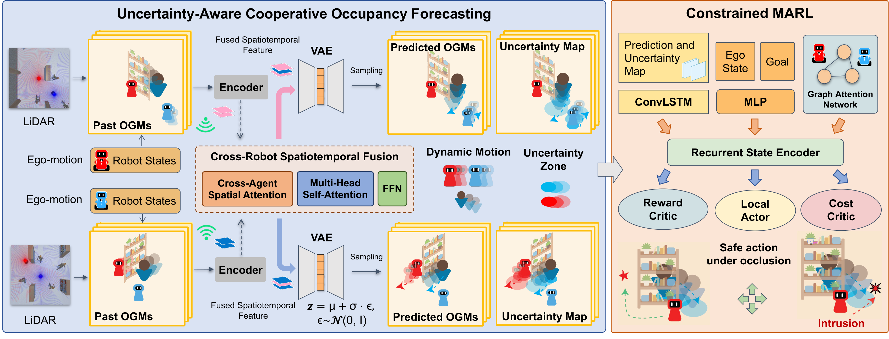
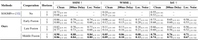
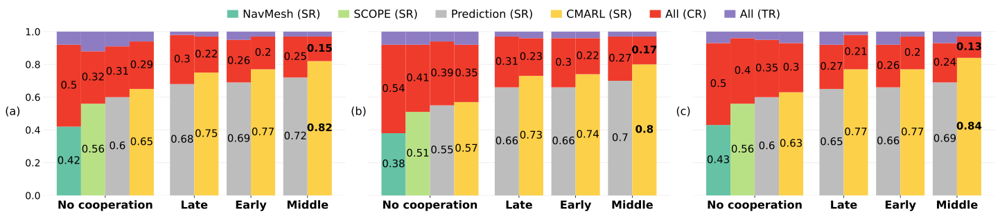
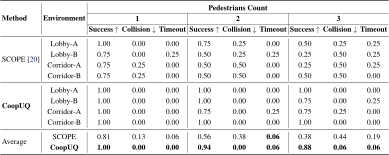

Abstract
Reinforcement learning enables mobile robots to make fast and scalable navigation decisions in constrained human-shared environments. However, directly extending single-robot approaches to multi-robot settings often fails to ensure safety and efficiency, especially under occlusions and out-of-distribution (OOD) scenarios, where individual robots may overlook potential risks or make inaccurate predictions. Leveraging cooperation effectively for both prediction and navigation remains a major challenge. We propose CoopUQ, a multi-robot social navigation framework that bridges uncertainty-aware cooperative occupancy forecasting and robust decision making. CoopUQ predicts future occupancy grid maps through cross-robot spatiotemporal feature fusion and further leverages forecasts and their uncertainty to guide policy via constrained multi-agent reinforcement learning, where the cost penalizes navigation through regions predicted to be occupied or highly uncertain. This design enables the policy to adapt its risk sensitivity under distribution shifts. Experimental results across multiple Unity3D-based simulation environments with both in-distribution and OOD settings, including diverse layouts, pedestrian densities, and rushing behavior, demonstrate improved prediction performance and safety over representative baselines. Real-robot experiments further demonstrate its robustness across various scenes.
Anticipating a pedestrian emerging from occlusion
Navigating around obstacles and moving pedestrians
How cooperation changes the response to occlusion
Adapting to different layouts and pedestrian interactions
Method

CoopUQ links where robots need information to where they should exercise caution. Each robot encodes its LiDAR-derived occupancy history and aligns neighboring features to its own frame. Spatial disagreement between these features provides a cue for a learned fusion gate, encouraging the use of complementary observations in occluded or inconsistent regions while preserving reliable local evidence. A variational autoencoder samples possible future occupancy maps, with pixel-wise entropy used to construct uncertainty maps. Crucially, predicted occupancy and high uncertainty also contribute to an explicit cost constraint in MAPPO-Lagrangian training, allowing the policy to adapt its risk sensitivity under occlusions and distribution shifts while avoiding unnecessary conservatism in well-observed regions.
Sustains reliable navigation as robot teams grow
Can cooperation improve forecasts despite delays and noisy poses?

What happens when layouts and pedestrian behavior change?

Does the learned policy transfer to real robots?

| Method | Environment | 1 pedestrian | 2 pedestrians | 3 pedestrians | ||||||
|---|---|---|---|---|---|---|---|---|---|---|
| Success ↑ | Collision ↓ | Timeout ↓ | Success ↑ | Collision ↓ | Timeout ↓ | Success ↑ | Collision ↓ | Timeout ↓ | ||
| SCOPE | Lobby-A | 1.00 | 0.00 | 0.00 | 0.75 | 0.25 | 0.00 | 0.50 | 0.25 | 0.25 |
| SCOPE | Lobby-B | 0.75 | 0.00 | 0.25 | 0.50 | 0.25 | 0.25 | 0.25 | 0.50 | 0.25 |
| SCOPE | Corridor-A | 0.75 | 0.25 | 0.00 | 0.50 | 0.50 | 0.00 | 0.25 | 0.50 | 0.25 |
| SCOPE | Corridor-B | 0.75 | 0.25 | 0.00 | 0.50 | 0.50 | 0.00 | 0.50 | 0.50 | 0.00 |
| CoopUQ | Lobby-A | 1.00 | 0.00 | 0.00 | 1.00 | 0.00 | 0.00 | 1.00 | 0.00 | 0.00 |
| CoopUQ | Lobby-B | 1.00 | 0.00 | 0.00 | 1.00 | 0.00 | 0.00 | 0.75 | 0.00 | 0.25 |
| CoopUQ | Corridor-A | 1.00 | 0.00 | 0.00 | 0.75 | 0.00 | 0.25 | 0.75 | 0.25 | 0.00 |
| CoopUQ | Corridor-B | 1.00 | 0.00 | 0.00 | 1.00 | 0.00 | 0.00 | 1.00 | 0.00 | 0.00 |
| SCOPE | Average | 0.81 | 0.13 | 0.06 | 0.56 | 0.38 | 0.06 | 0.38 | 0.44 | 0.19 |
| CoopUQ | Average | 1.00 | 0.00 | 0.00 | 0.94 | 0.00 | 0.06 | 0.88 | 0.06 | 0.06 |
BibTeX
@inproceedings{wang2026coopuq,
title = {CoopUQ: Robust Multi-Robot Social Navigation via
Uncertainty-Aware Cooperative Forecasting},
author = {Wang, Zehao and Yao, Jianpeng and Wang, Yuping and
Li, Yiping and Li, Jiaqi and Li, Zhixu and Lee, Kanghoon and
Wang, Jinfeng and Liu, Cong and Tan, Zhaowei and
Park, Jinkyoo and Li, Jiachen},
booktitle = {10th Conference on Robot Learning (CoRL)},
year = {2026}
}